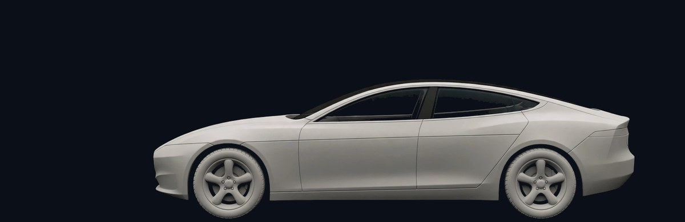
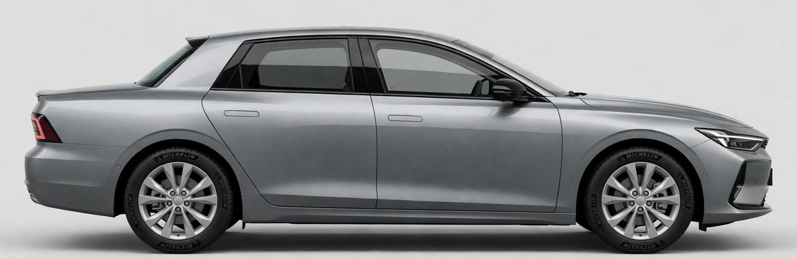
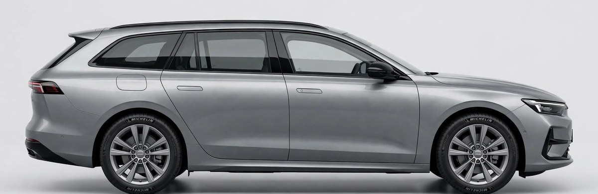

Car aero in milliseconds, not hours.
A physics-informed ML surrogate that predicts a vehicle's drag, lift and EV highway range from 23 geometric parameters in 0.051 ms on CPU — and searches for the lowest-drag body under your constraints.
Drive the surrogate. Watch Cd, lift & EV range respond.
Adjust key DrivAerNet++ geometric parameters below or run a constrained inverse-design sweep. The vehicle profile, wake separation and 75 kWh EV highway range delta update in real time.

CFD takes hours. Designers need answers now.
One car shape, one high-fidelity CFD run, hours of compute. Engineers cannot iterate, and they definitely cannot ask “what shape is best?” in real time. AeroSurrogate learns the map from shape to aero numbers, then answers in a blink.
One design, one run. A mesh, a solver, a wait. Exploring 100 shapes means weeks.
Same question, answered before you finish blinking. Ten thousand shapes in half a second.
target Cd + constraints → inverse design → lowest-drag geometry in < 1.5 s
Four parts. Three built and measured.
Predict the aero numbers
LightGBM, CatBoost and a PyTorch Residual MLP ensemble predicting Cd, Cl and frontal area from 23 geometric parameters, served as ONNX on CPU, with calibrated 95% conformal prediction intervals.
Turn drag into kilometres
Drag area (Cd·A) and aero power converted into EV highway range delta in km, for a reference 75 kWh EV at 110 km/h. A drag cut becomes a range number you can feel.
Ask for the shape, not the number
An Optuna optimizer that returns the lowest-drag geometry under practical constraints: cabin space, ground clearance, diffuser limits and frontal-area bounds.
Drive it with sliders
FastAPI /predict and /optimize endpoints behind a Streamlit UI: geometry sliders, live Cd, Cl and range gauges, a SHAP waterfall and one-click optimization.
Every number is measured. None is claimed.
Measured 22 Nov 2026, laptop CPU only, on MIT's official validation split (555 designs). The test split (559 designs) stays untouched until final evaluation. Switch the metric and watch the bars move.
Drag coefficient, MAE (lower is better)
LightGBM trains in about 10 seconds on CPU. CatBoost is close behind and leads on frontal area. The Residual MLP trails the tree ensembles on this tabular geometry.
| Metric | Target | Measured | Status |
|---|---|---|---|
| Cd MAE, LightGBM baseline | < 0.005 | 0.0103 | GAP |
| Cd R², LightGBM baseline | > 0.96 | 0.64 | GAP |
| Cd MAE, CatBoost baseline | < 0.005 | 0.0110 | GAP |
| Cd MAE, Residual MLP baseline | < 0.005 | 0.0126 | GAP |
| Cl R², best baseline | > 0.96 | 0.38 | GAP |
| Frontal area R², best baseline | > 0.96 | 0.999 | MET |
| Inference latency, joint MLP ONNX | < 2 ms | 0.051 ms | MET |
| Conformal coverage, 90% nominal, Cd | 90% | 90–94% | MET |
| Conformal coverage, 95% nominal, Cd | 95% | 95–97% | MET |
benchmarks/ in the repo.
Same model, three bodies. One of them breaks it.
Cd R² by body type, LightGBM, validation split. Fastback and notchback behave. Estateback has a blunt, squared rear end where the wake separates at the trailing edge no matter how you tweak the slant, so geometry alone barely explains its drag.

Fastback
Sloping rear window, separation point moves with the angles. Geometry explains most of the drag.

Notchback
Distinct boot lid, trunk and rear-window angles still steer the wake. Solid, not great.

Estateback
Blunt squared tail. Wake separation barely responds to the parameters, so the model has almost nothing to learn from. The fix is body-type stratified trees or explicit estateback interaction terms.
It knows how unsure it is. And it is right about that.
Split conformal prediction (CV+) on the training set gives distribution-free intervals for every Cd prediction. A 90% interval really does cover the truth about 93% of the time.
The interval is honest: slightly conservative, never overconfident. Group-conditional coverage stays above 92% on every body type.
Widen the interval a little and coverage follows. Calibration holds, so the intervals are safe to plan around, not just to quote.
Real CFD. Real cars. One honest correction.
DrivAerNet++ (MIT, NeurIPS 2024): 8,150 car designs with high-fidelity CFD, fastback, notchback and estateback, ICE and EV underbodies. This project uses only the lightweight tabular files, not the 39 TB of volumetric CFD. Dataset license: CC BY-NC 4.0, non-commercial research and education only.
Clone it. Run it. Ten minutes, CPU only.
python -m venv .venv && source .venv/bin/activate
pip install -r requirements.txt
python -m src.ingest.download_drivaer # 6 lightweight files, ~2 MB
python -m src.ingest.merge_validate # merged Parquet + manifest
python -m src.models.train_baselines # LightGBM, CatBoost, MLP on train, eval on valTwo-week build. 22 Nov to 5 Dec 2026.
- DONE
Day 1 · Data. Download, merge and validate DrivAerNet++.
- DONE
Days 2–4 · Features + baselines. 35 features, three baselines measured on val.
- DONE
Days 5–7 · Uncertainty + ONNX. Conformal intervals, ONNX export, 0.051 ms latency.
- DONE
Days 8–9 · EV physics + optimizer. Range bridge and Optuna inverse design.
- NEXT
Days 10–12 · API + dashboard + accuracy. FastAPI endpoints, Streamlit UI, tuning toward the Cd targets.
- NEXT
Days 13–14 · Final evaluation. Official test split, demo, README.
Built by Kartikey Singh
AI/ML Developer · Physics-informed surrogates, tabular ensembles & uncertainty quantification